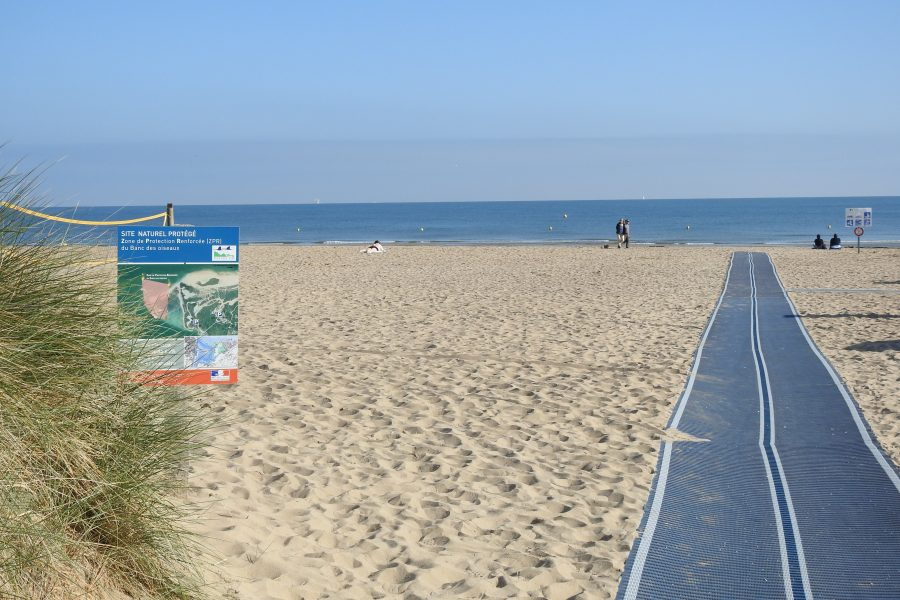
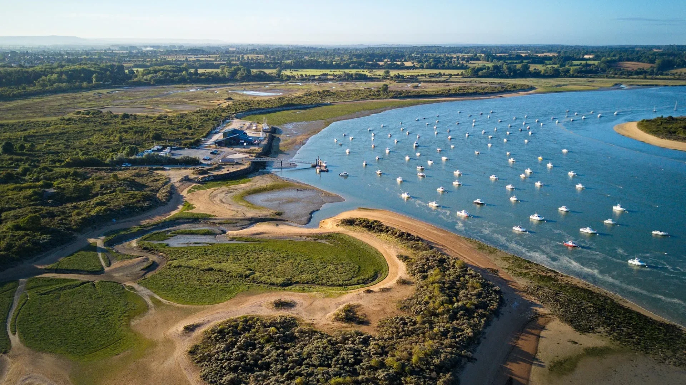
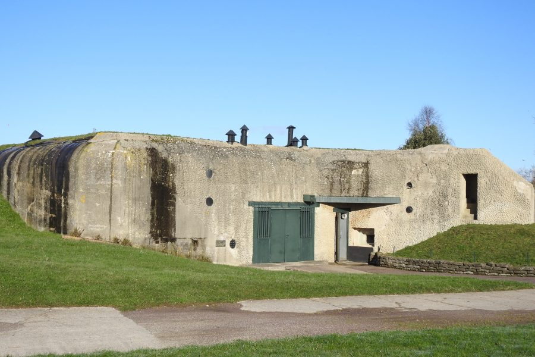
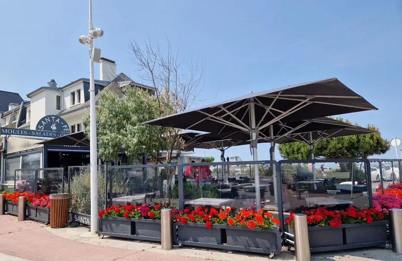
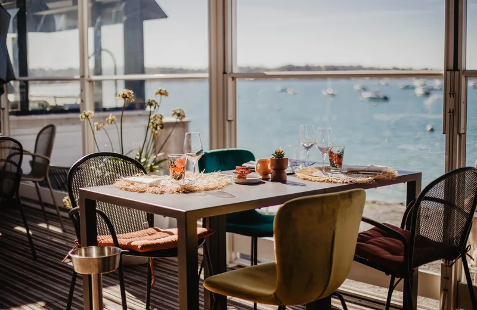
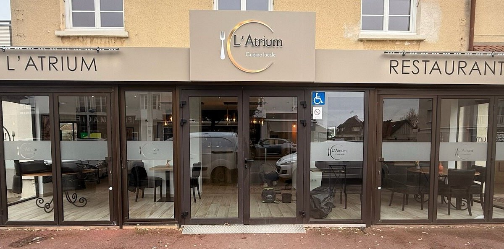
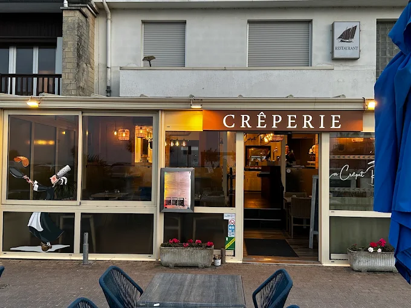
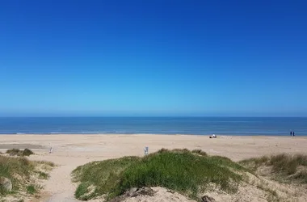
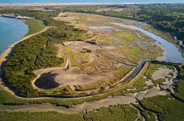
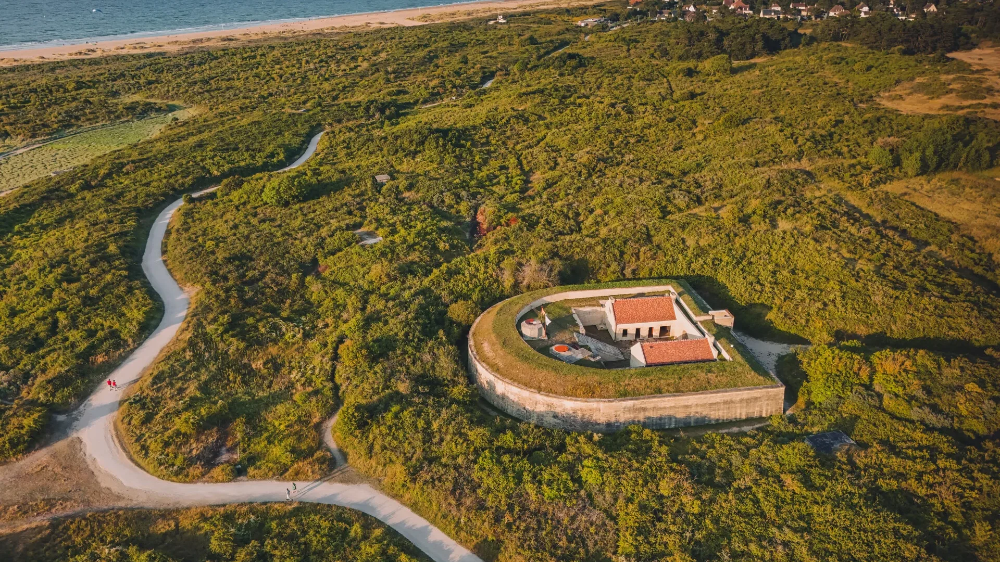

Plage
Plage de Merville-Franceville
Une immense plage de sable idéale pour profiter du littoral.
Entre mer, nature et histoire
Présentation
Située à l’embouchure de l’Orne, Merville-Franceville-Plage séduit par son immense plage de sable, ses espaces naturels et son patrimoine historique. Entre balades en bord de mer, activités nautiques et découverte des sites du Débarquement, la station offre un cadre agréable pour profiter de la Côte Fleurie.
À ne pas manquer

Une immense plage de sable idéale pour profiter du littoral.

Un espace naturel préservé à découvrir à pied ou à vélo.

Un site historique majeur du Débarquement en Normandie.
Saveurs

Une adresse conviviale à deux pas de la plage, entre pizzas, galettes, crêpes et moules-frites.
Découvrir l'adresse
Une adresse emblématique, avec un cadre particulièrement intéressant au bord de la baie. Elle ressort régulièrement parmi les adresses les plus populaires de la commune.
Découvrir l'adresse
Pour représenter une cuisine plus gastronomique et locale.
Découvrir l'adresse →
Une option plus décontractée, face à la mer, qui apporte une vraie touche « station balnéaire
Découvrir l'adresse →Coups de cœur

Profitez de la beauté naturelle des dunes qui bordent la côte normande.

Un endroit paisible pour observer les oiseaux au cœur de l’estuaire de l’Orne

Une étonnante petite forteresse en forme de fer à cheval, héritée des anciennes défenses de l’estuaire.
Explorez Cabourg